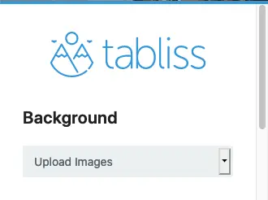
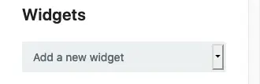
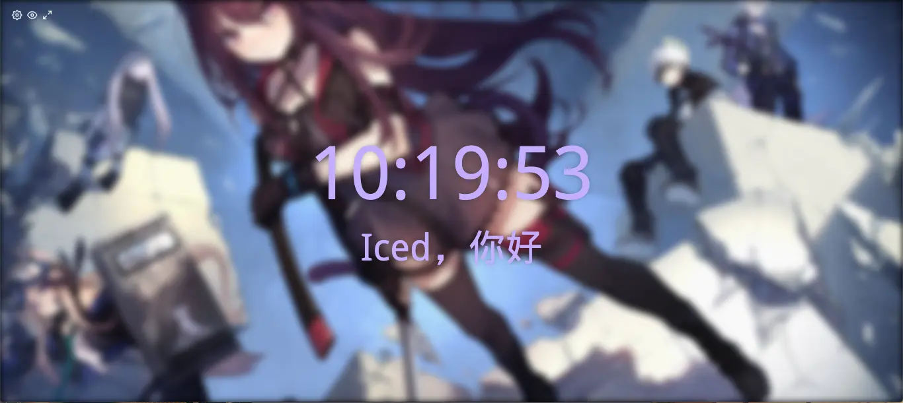
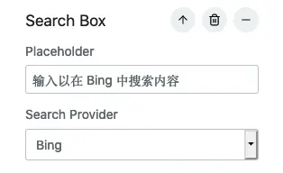
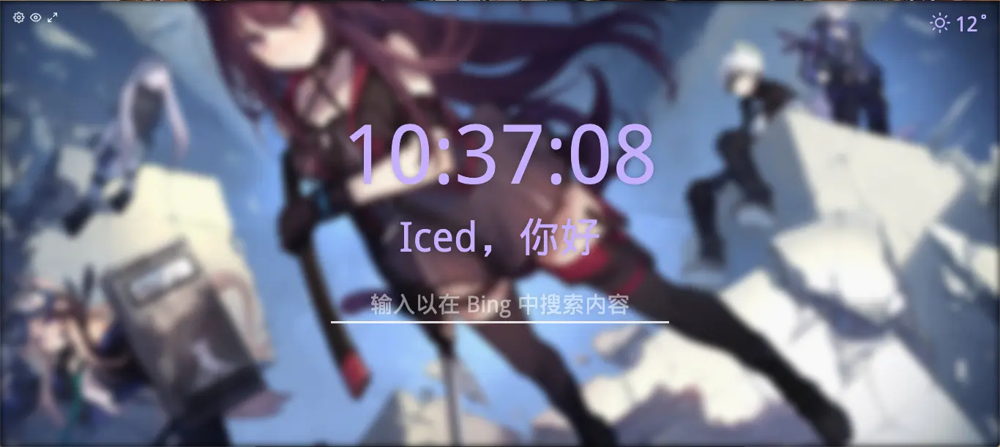
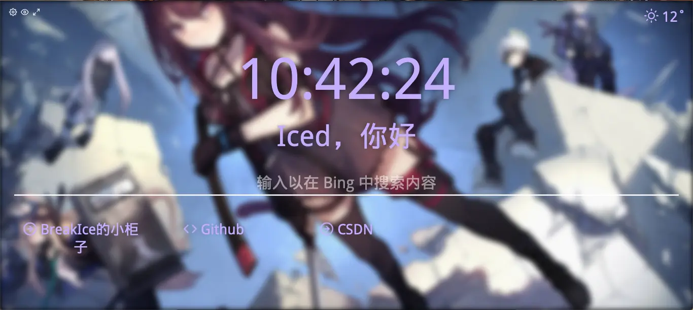

Tabliss插件
Tabliss
前文
火狐拥有强大的插件功能以及不计其数的插件，他们的强大让我们叹为观止
前一阵子发现的一个用于改善新标签页的一个插件
在这里特意感谢犬里，意外之中让我发现了这个精美简单的新 Tab 插件
开搞
按照国际惯例，我们需要安装 Tabliss 插件到浏览器中。
然后我们打开一个新标签页，这个时候就是默认的纯洁的的 Tabliss 了
基本的修改
我们望向左上角，有一个齿轮标志,点开它。
将Background项改为Upload Images
就会变成这样

上传一些你喜欢的图形给 Tabliss 吧，它支持多图片随机轮换，每次开启都会不一样
点开Greeting组件，在 name 项中输入你希望显示的名字
我们发现一个问题，字体和背景图片混在一起的时候很难看清字体，所以我们需要更加高级的修改
高级修改
背景模糊
再次点开齿轮标志，其中有 CSS Custom 项。
当然也可能没有，我们添加组件即可

我们向里面写入这些
1 | |
它的功能是让背景模糊化，其中*filter: blur(5px);*中括号内的内容是模糊程度，可以看情况进行修改
输入完毕后我们会发现它已经是模糊的背景了，长这样

搜索框
我认为一个新标签页有一个输入框比较好。于是我们点开Add new widget，选中Search Box来添加搜索框
随后我们点开Search Box，里面可以切换搜索引擎，换成 Bing(自选)
好空旷的搜索框，在Placeholder输入一些文字吧。我输入的是输入以在 Bing 中搜索内容。
于是变成了这样

现在 Tabliss 长成了这样
天气
不如让 Tabliss 能显示天气吧？
在Add new widget中选中Weather，点击Enter coordinates切换到使用经纬，因为我们可以让浏览器自动定位我们的位置，减懒了。
有一个像是纸飞机的标志，点击它让它定位。OK 了后，看看右上角吧
现在 Tabliss 长这样

快捷链接
让它能有快捷链接如何？这样我们的操作会更加方便，因为可以添加不少的常用链接进去
在Add new widget中选中Quick Links
其中Number of columns的意思是一行同时显示几个，我填的 5
点开Add link，输入想要添加的链接，名字，和选一个图标。
现在它已经能满足我的绝大部分需求了，它现在是这样的

本博客所有文章除特别声明外，均采用 CC BY-SA 4.0 协议 ，转载请注明出处！